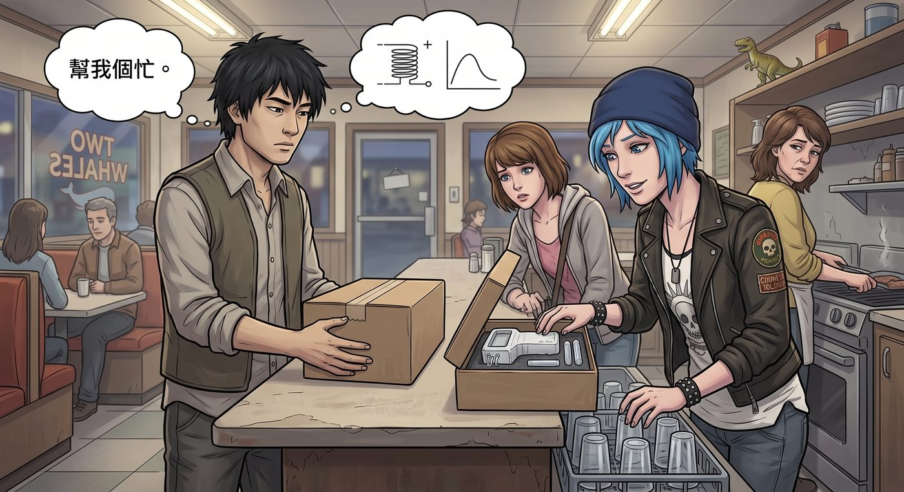

測試品 0.3 版

一、意外的委託
「幫我個忙。」某天,Kenji 拎著一個素色紙盒,神秘兮兮地出現在雙鯨餐廳門口,把盒子往吧檯上一放。
「什麼東西?」Chloe 好奇地湊過去。
「加熱菸的原型機,」Kenji 語氣一如既往地平淡,「我最近在研究溫控晶片的演算法,順手接了個小外包案子,幫忙做使用者測試。妳抽菸,剛好是最理想的受試者。」
Chloe 打開盒子,裡面是一個造型笨拙、還帶著明顯 3D 列印痕跡的白色充電裝置,側面甚至還留著一截沒剪乾淨的支撐材料。
「這玩意看著跟醫療器材似的,」她翻來覆去地端詳,「妳確定這能用?」
「0.3 版,」Kenji 糾正她,「還在調試階段,可能會有點小問題,妳幫我記錄一下使用心得就行。」
Chloe 聳聳肩,反正閒著也是閒著,便收下了這個古怪的測試品。
二、笨拙的初體驗
Max 湊過來看熱鬧,看著 Chloe 一臉困惑地研究說明書,忍不住笑出聲。
「這操作方式也太複雜了吧,」Chloe 對照著說明書上密密麻麻的圖示,「先長按三秒,等震動兩下,再按一下確認,溫度還要手動調——老娘只是想抽根菸,不是在操作火箭發射器。」
她試著按照步驟操作,結果那台笨拙的原型機發出一陣刺耳的嗶嗶聲,螢幕上跳出一串完全看不懂的錯誤代碼。
「壞了?」Max 探頭看了一眼。
「大概是我按錯順序了,」Chloe 又試了一次,這次總算成功點亮了加熱指示燈,她小心翼翼地吸了一口——結果一股奇怪的焦糊味瞬間衝進喉嚨,嗆得她連連咳嗽。
「這什麼味道,」她一臉生無可戀,「跟燒橡皮筋似的。」
Max 被她這副狼狽樣逗得直笑,一邊笑一邊替她拍背:「妳要不要傳訊息跟 Kenji 反應一下?」
「反應個屁,」Chloe 沒好氣地把那台原型機拍在桌上,「這根本還沒調試好,叫我當白老鼠。」
三、輪流受害
接下來幾天,那台原型機成了兩人共同的「受害對象」。
某次 Chloe 好不容易摸出了正確的操作順序,得意地想示範給 Max 看,結果溫控晶片忽然抽風,瞬間飆到最高溫,燙得她「嗷」地一聲甩開加熱棒,像被踩到尾巴的貓一樣跳開。
「妳沒事吧?」Max 又是心疼又是想笑。
「沒事,」Chloe 齜牙咧嘴地吹著發紅的指尖,「就是被 Kenji 的破玩意燙了個正著。」
Max 忍不住湊過去,好奇地拿起那台原型機翻看:「讓我試試,說不定我運氣比較好。」
「妳確定?」
「我倒要看看,」Max 一臉躍躍欲試,「這玩意到底有多離譜。」
她照著說明書小心翼翼地操作,結果比 Chloe 更慘——不知道哪個步驟出了差錯,那台機器忽然發出一陣詭異的電流雜音,接著,加熱棒前端「啵」地一聲,冒出一小撮青煙,徹底報廢。
兩人面面相覷,隨即同時笑倒在沙發上。
「這下好了,」Chloe 笑得肚子疼,「連妳都能把它玩壞,看來不是我的問題。」
「這根本是個定時炸彈,」Max 也笑得直不起腰,「Kenji 是想拿我們兩個試爆嗎?」
四、退貨報告
隔天,兩人一起把那台冒煙報廢的原型機,連同一份寫得亂七八糟、塗改處處的「使用心得報告」,一起交還給 Kenji。
Kenji 接過那台明顯燒毀的機器,眉頭皺得死緊,翻看報告上潦草的字跡——「操作步驟過於複雜」「溫控晶片疑似有問題,燙傷測試者」「最終自燃報廢」。
「……妳們兩個,」他語氣裡帶著一絲難得的無奈,「是把它當引爆裝置測試了嗎?」
「這鍋我們不背,」Chloe 理直氣壯地攤手,「東西本身就有問題,不信妳自己試試。」
Kenji沉默地看著那截還冒著焦味的殘骸,最終還是嘆了口氣,認命地把它收進工具包。
「行吧,」他喃喃自語,「看來 0.4 版,得先解決過熱保護的問題。」
Chloe 和 Max 對視一眼,忍不住又笑出聲,轉身勾肩搭背地走出機房,留下 Kenji 一個人,對著那堆殘骸,陷入了沉思。
「至少,」Chloe 抽出自己藏在口袋裡、貨真價實的打火機,咔噠一聲點燃,深吸一口,神情放鬆得像是逃過一劫,「這個,不會忽然爆炸。」
Max 靠在她肩上,看著那截舊打火機,眼底帶著點寵溺的笑意,沒有多說什麼,只是任由她抽完這根,帶著劫後餘生般的滿足感。